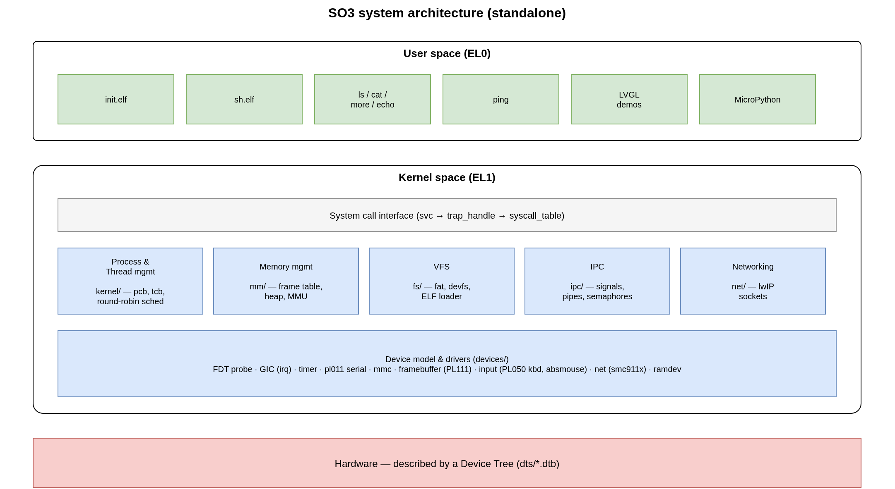
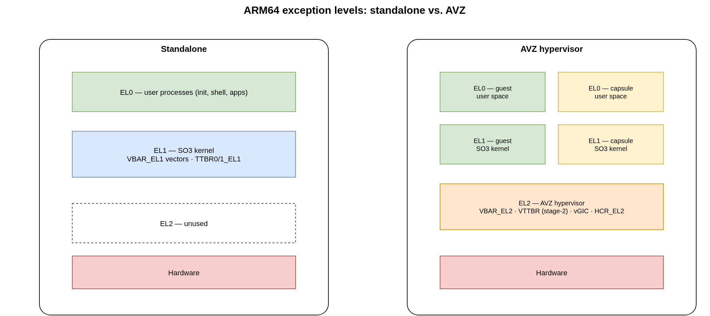
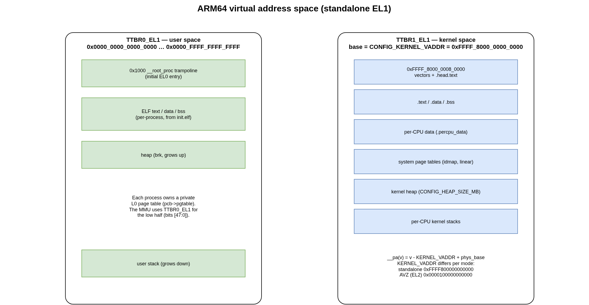
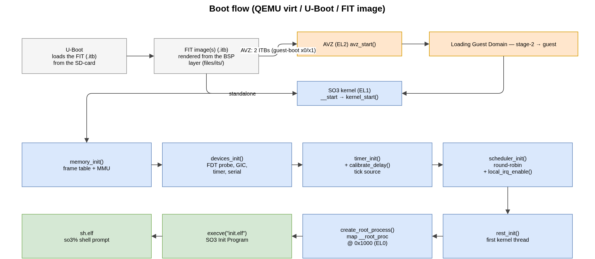

2. SO3 Architecture
SO3 follows a conventional operating-system organisation with a user space and a kernel space. It is a monolithic kernel, like Linux: all subsystems and device drivers live in the kernel.
{kind=link}

Fig. 2.1 Overview of the SO3 environment (standalone configuration).
The user space is a small set of lightweight applications (init, the shell,
ls, cat, more, ping, …) built against the MUSL C library and
stored in a root filesystem. The kernel provides the usual subsystems —
process/thread management and scheduling, memory management, a virtual
filesystem, IPC, networking — plus a device-tree-driven device and driver model.
2.1. Source tree
The kernel source lives under so3/so3/ and is organised by subsystem:
so3/so3/
├── arch/ # architecture-specific code (arm32, arm64)
│ └── arm64/ # head/boot, exceptions, MMU, context switch, traps
├── kernel/ # processes, threads, scheduler, syscalls, time
├── mm/ # page frame allocator, kernel heap
├── fs/ # VFS, FAT, devfs, ELF loader
├── ipc/ # signals, pipes, semaphores, completions
├── net/ # networking, lwIP TCP/IP stack
├── devices/ # device model + drivers (irq, timer, serial, mmc, fb, …)
├── dts/ # device trees (*.dts → *.dtb)
├── avz/ # the AVZ hypervisor (built with CONFIG_AVZ)
├── soo/ # the SOO framework / SO3 capsules (CONFIG_SOO)
├── apps/ # optional kernel-space example apps (CONFIG_APP_*)
├── include/ # kernel headers
├── configs/ # defconfig files
└── lib/ # in-kernel helper libraries (libfdt, libroxml, …)
Note
Kernel paths are quoted relative to that tree throughout this
documentation: arch/arm64/mmu.c means so3/so3/arch/arm64/mmu.c.
The user space lives under so3/usr/ and the surrounding tooling (build
system, bootloader, emulator, root filesystem, deployment scripts) at the
repository root — see Build System and User Space.
2.2. Exception levels
On ARM64, SO3 uses the architectural exception levels as follows.
{kind=link}

Fig. 2.2 Exception levels in the standalone and AVZ configurations.
Standalone — user processes run at EL0, the SO3 kernel at EL1. EL2 is unused. The kernel owns
VBAR_EL1(exception vectors) and theTTBR0_EL1/TTBR1_EL1translation tables.AVZ — the AVZ hypervisor runs at EL2 (
VBAR_EL2, stage-2 translation viaVTTBR_EL2,HCR_EL2configured to trap and inject interrupts). Each guest (the agency and any capsule) runs its own SO3 kernel at EL1 with its user space at EL0, isolated by per-domain stage-2 tables.
The exact level a given build targets is selected by CONFIG_AVZ. The same
C and assembly files implement both; EL2-specific code is guarded with
#ifdef CONFIG_AVZ (for example the TLB-maintenance instructions in
arch/arm64/cache.S and the vector handlers in arch/arm64/exception.S).
2.3. Virtual address space
Each process owns a private set of page tables. On ARM64 the low half of the
address space (TTBR0_EL1) maps the current user process, and the high half
(TTBR1_EL1) maps the kernel.
{kind=link}

Fig. 2.3 ARM64 virtual address space (standalone, EL1).
The kernel base address is configured by CONFIG_KERNEL_VADDR:
Configuration |
|
Notes |
|---|---|---|
standalone (EL1) |
|
kernel in the high (TTBR1) half |
AVZ (EL2) |
|
hypervisor address space |
The __pa() / __va() macros (include/memory.h) translate between
kernel virtual addresses and physical addresses using CONFIG_KERNEL_VADDR
and the physical RAM base discovered from the device tree. The initial user
program is mapped at USER_SPACE_VADDR (0x1000). See Kernel Internals for
the page-frame allocator and the MMU code.
2.4. Boot flow
SO3 is started by U-Boot, which loads a FIT image (.itb) containing
the kernel, the device-tree blob and the root filesystem. In the AVZ
configuration U-Boot loads the hypervisor and the guest as two separate
ITBs — the AVZ ITB (<plat>_avz) and the SO3 guest ITB
(<plat>_so3_guest) — on every AVZ platform (virt64, rpi4_64,
verdin_imx8mp); see Build System.
{kind=link}

Fig. 2.4 Boot flow from U-Boot to the interactive shell.
U-Boot loads the FIT image(s) from the boot medium and jumps to the entry point of the first component. In the
virt64two-ITB AVZ boot it loads both the AVZ and guest ITBs and enters AVZ through theguest-bootcommand, which passes the AVZ FIT inx0and the guest ITB inx1.In the AVZ configuration, control enters the hypervisor (
avz_start()at EL2); AVZ sets up the stage-2 tables, loads the guest domain anderets into the guest at EL1. In the standalone configuration U-Boot jumps straight to the SO3 kernel entry (__start→kernel_start()) at EL1.The kernel brings itself up:
memory_init()(frame table + MMU),devices_init()(device-tree probe, GIC, timer, serial),timer_init()andcalibrate_delay(),scheduler_init(), then interrupts are enabled.rest_init()runs as the first kernel thread and callscreate_root_process(), which maps the__root_proctrampoline at0x1000and enters EL0.The root process
execve()sinit.elf(the SO3 Init Program), which in turn launches the shell (sh.elf) — the familiarso3%prompt.
The individual steps are described in Kernel Internals; the packaging of the FIT image and the U-Boot/QEMU setup are covered in Build System and User Guide.